Breakthroughs in Plasma Physics and Magnetohydrodynamics#
It is not too much to say that we now live in a plasma era: the state Irving Langmuir named almost as an aside in 1928 turned out, within a few decades, to be the state of nearly everything – a paraphrase of the spirit of his work rather than a verified quotation from it.
Plasma – ionized gas dense enough that collective electromagnetic forces,
not two-body collisions, dominate its behavior – is often called the
fourth state of matter, and it makes up more than 99% of the visible
universe: the solar wind, the ionosphere, lightning, fusion reactors, and
the interior of every star. This chronology traces the major conceptual
breakthroughs behind physicskit.plasma, from Debye and Huckel’s
1923 theory of ionic shielding and Langmuir’s naming of the plasma state
in 1928 to the gyrokinetic turbulence theory that
underlies modern fusion-reactor design. Every stop has a pointer to the
corresponding implementation in this package, a structural diagram of the
system it describes, and a short, runnable example reproducing the
milestone’s signature observable.
1923 – Debye and Huckel: Ionic Shielding and the Debye Length#
Peter Debye and Erich Huckel, working on the – at the time entirely unplasma-like – problem of strong electrolyte solutions, asked how the Coulomb field of a single ion is modified by the cloud of oppositely charged ions it attracts and likewise charged ions it repels around itself. Linearizing the self-consistent Poisson-Boltzmann equation for that screening cloud, they found that the bare \(1/r\) Coulomb potential is replaced by one cut off exponentially beyond a single characteristic length – now called the Debye length, \(\lambda_D=\sqrt{\varepsilon_0 k_BT/(nq^2)}\) – beyond which the charge simply looks neutral to a distant observer. Plasma physicists later adopted the identical mathematics essentially unchanged: a plasma’s own mobile charges screen any point charge or applied perturbation over exactly this length, and the defining property of a plasma – quasineutrality on macroscopic scales, together with the collective, wave-supporting behavior Langmuir would discover five years later – is really the statement that every length scale of physical interest vastly exceeds \(\lambda_D\).
Connection: no function in physicskit.plasma computes the
Debye length as a standalone quantity, since throughout the package it
appears folded directly into other formulas rather than exposed on its
own: physicskit.plasma.kinetic.landau_damping_rate() forms it
explicitly as lambda_D = v_th / omega_pe on the way to the
weak-damping formula in the Landau entry below, and the “Debye-length
dispersion” that balances nonlinear steepening in
ion_acoustic_soliton_evolve()
(Washimi-Taniuti entry below) is the same screening length entering
through the ion-acoustic dispersion relation.
References: P. Debye and E. Huckel, “Zur Theorie der Elektrolyte,” Phys. Z. 24, 185-206 (1923), later adapted to plasmas.
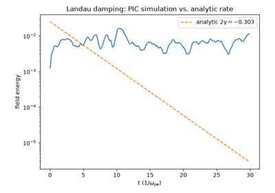
Landau damping from first principles with particle-in-cell
1928 – Langmuir Coins “Plasma” and Discovers Electron Oscillations#
Studying ionized gas in electrical discharge tubes, Irving Langmuir noticed that the bulk of the ionized gas – as opposed to the charge-separated sheath near an electrode – carried no net charge and behaved collectively, reminding him of blood plasma carrying corpuscles; the name stuck. Probing it with an oscillating electrode, he found the electron gas resonates at a sharply defined natural frequency, the plasma frequency, at which any local charge imbalance oscillates rather than simply relaxing away: displace the electrons and their own restoring electric field snaps them back, overshoots, and rings, exactly like a mass on a spring built from nothing but the plasma’s own charge density.
Implementation: physicskit.plasma.waves.plasma_frequency()
computes \(\omega_p=\sqrt{nq^2/(\varepsilon_0 m)}\) directly from
this restoring-force argument, and every cold-plasma dispersion relation
in physicskit.plasma.waves is built from it.
References: I. Langmuir, “Oscillations in Ionized Gases,” Proc. Natl. Acad. Sci. 14(8), 627-637 (1928); L. Tonks and I. Langmuir, “Oscillations in Ionized Gases,” Phys. Rev. 33, 195-210 (1929), and “A General Theory of the Plasma of an Arc,” Phys. Rev. 34, 876-922 (1929).
The oscillation itself – rather than just its frequency – is
reproduced from first principles by
physicskit.plasma.kinetic.langmuir_wave_ic(), which seeds a
particle-in-cell plasma with both the density ripple and the coherent
fluid-velocity perturbation linear theory predicts for a wave genuinely
oscillating at \(\omega_{pe}\); evolved with the same
pic_simulate() used for Landau damping
and the two-stream instability, the density rings in place for many
periods rather than damping away, exactly the “mass on a spring” picture
above but built from particle orbits rather than assumed.
physicskit.plasma.visualizers.animate_langmuir_wave() animates the
oscillating density profile directly. See it in
Langmuir waves: electron density ringing at the plasma frequency.
1938 – Vlasov’s Collisionless Kinetic Equation#
Anatoly Vlasov challenged the standard collision-integral form of the Boltzmann equation as applied to a plasma, arguing that because the Coulomb force is long-range, a charged particle’s motion is dominated overwhelmingly by the smoothed-out, self-consistent field generated collectively by every other particle at once, rather than by the occasional close two-body encounters a collision integral counts – and that at plasma densities the mean free path for such close encounters is typically many orders of magnitude larger than any length scale of interest, so the collision term could simply be dropped. The resulting equation,
– the Vlasov equation, or “Vlasov-Poisson”/”Vlasov-Maxwell” once coupled self-consistently to the field equations – describes a plasma as a continuous distribution \(f(\mathbf{x},\mathbf{v},t)\) advected through phase space along exact single-particle orbits, with no dissipation anywhere in the equation. It is the single equation underlying nearly every kinetic result in this chronology: Landau damping below is its linearization about a Maxwellian, the two-stream and Weibel instabilities are linearizations about other equilibria, and gyrokinetics is its gyro-averaged reduction.
Implementation: physicskit.plasma.kinetic solves exactly this
equation by the method of characteristics – “each particle is one
characteristic,” as its module docstring puts it –
pic_step() advancing every particle
along its characteristic while solve_poisson_1d()
closes the system self-consistently each step, and
pic_simulate() drives the whole loop
forward in time; maxwellian_velocities(),
landau_damping_ic(),
langmuir_wave_ic(), and
two_stream_ic() seed this one solver
with the different initial distributions examined individually in the
entries below.
References: A. A. Vlasov, “On Vibration Properties of Electron Gas,” J. Exp. Theor. Phys. 8, 291-318 (1938).
Landau damping from first principles with particle-in-cell
1942 – Alfven Waves and the Birth of Magnetohydrodynamics#
Hannes Alfven proposed that a magnetized, highly conducting fluid should support a wave nobody had previously imagined: magnetic field lines, frozen into the plasma by its high conductivity, behave like strings under tension \(B^2/\mu_0\), plucked sideways by the fluid’s own inertia. The result – the Alfven wave – travels at \(v_A=B/\sqrt{\mu_0\rho}\), purely transverse and non-compressive, and founded magnetohydrodynamics (MHD) as a discipline treating the plasma as a single conducting fluid rather than a swarm of individual particles. The idea was greeted with skepticism – as the story goes, a widely repeated but unsourced anecdote has Enrico Fermi needing a blackboard demonstration before he was convinced – but earned Alfven the 1970 Nobel Prize in Physics.
Implementation: physicskit.plasma.mhd.alfven_speed() computes
\(v_A\) directly; physicskit.plasma.mhd.magnetosonic_speeds()
extends the idea to the compressive fast and slow modes that appear once
plasma pressure is added back into the picture. See it in
Alfven waves and the magnetosonic wave-speed diagram.
References: H. Alfven, “Existence of Electromagnetic-Hydrodynamic Waves,” Nature 150, 405-406 (1942).
Beyond the wave speed alone, physicskit.plasma.waves.alfven_wave_pulse_ic()
and simulate_alfven_wave() propagate an
actual transverse-field pulse: a “plucked string” disturbance released
from rest, evolved under the linearized 1D ideal-MHD induction and
momentum equations, splits exactly in half and travels outward at
\(\pm v_A\) in each direction – the field-line-plucking picture
Alfven’s own analogy describes, reproduced dynamically rather than
asserted. physicskit.plasma.visualizers.animate_alfven_wave()
animates the pulse splitting and propagating. See it in the same
gallery script,
Alfven waves and the magnetosonic wave-speed diagram.
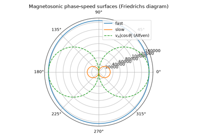
Alfven waves and the magnetosonic wave-speed diagram
1946 – Landau’s Collisionless Damping#
Lev Landau solved the linearized Vlasov equation for a wave on a Maxwellian plasma and found something that seemed to violate reversible mechanics: the wave damps, exponentially, with no collisions or dissipation anywhere in the equations. The resolution is that particles moving at very nearly the wave’s phase velocity “surf” it – and because a thermal (Maxwellian) distribution always has slightly more slightly slower particles being accelerated (gaining energy from the wave) than slightly faster particles being decelerated (giving energy back) at any finite temperature, the net exchange drains the wave. Experimentally confirmed only in 1964 (Malmberg and Wharton, in a electron plasma column), Landau damping is now the textbook example of dissipation without collisions – entropy generated by phase mixing in velocity space alone.
Implementation: physicskit.plasma.kinetic.landau_damping_rate()
evaluates the analytic weak-damping formula, and
physicskit.plasma.kinetic.pic_simulate() reproduces the decay from
first principles with a particle-in-cell solution of the same Vlasov
equation Landau linearized – no damping term appears anywhere in
pic_step(); the decay is a pure
consequence of the particle orbits.
References: L. D. Landau, “On the Vibrations of the Electronic Plasma,” J. Phys. USSR 10, 25-34 (1946) [Zh. Eksp. Teor. Fiz. 16, 574 (1946)]; experimental confirmation J. H. Malmberg and C. B. Wharton, Phys. Rev. Lett. 13, 184-186 (1964).
Landau damping from first principles with particle-in-cell
where \(\lambda_D=v_{th}/\omega_{pe}\) is the Debye length and \(\gamma<0\) is the (negative, i.e. decaying) rate at which the wave’s electric-field energy amplitude falls off.
1948-1949 – The Two-Stream Instability (Haeff, Pierce, Bohm & Gross)#
Studying velocity-modulated electron beams for microwave tubes, Andrew Haeff (1948) and John Pierce (1948) independently found that a beam of electrons streaming through a background plasma spontaneously breaks up into density bunches that grow exponentially – the beam gives up kinetic energy to a plasma wave rather than propagating undisturbed. David Bohm and Eugene Gross (1949) derived the general kinetic dispersion relation for two interpenetrating electron populations and showed the instability is the mirror image of Landau damping: instead of a single Maxwellian with everywhere-negative velocity-space slope \(\partial f/\partial v\), two counter-streaming beams create a region of positive slope between their peaks, and it is precisely that positive slope – formalized a decade later as the Penrose criterion – that pumps energy from the particles into the wave instead of draining it. The two-stream instability is now the archetypal kinetic (velocity-space) plasma instability, underlying phenomena from auroral electron beams to the saturation physics of particle accelerators and inertial-fusion hohlraums.
Implementation: physicskit.plasma.kinetic.two_stream_ic() seeds
exactly this doubly-peaked, counter-streaming initial condition; run
through the same pic_simulate() used for
Landau damping above, it reproduces exponential growth instead of decay
from the identical Vlasov-Poisson machinery – proof that both phenomena
are two faces of one kinetic mechanism.
physicskit.plasma.visualizers.animate_two_stream_phase_space()
redraws the full \((x,v)\) particle scatter frame by frame, so the
two initially separate, straight beams can be watched wrapping around
each other into the single saturated “cat’s-eye” vortex that the static
before/after snapshot below can only hint at. See it in
The two-stream instability: exponential growth and phase-space vortices.
References: Haeff’s 1948 announcement appears to be the short communication A. V. Haeff, “Space Charge Wave Amplification Effects,” Phys. Rev. 74, 1532 (1948) (abstract only); his fuller treatment is “The Electron-Wave Tube – A Novel Method of Generation and Amplification of Microwave Energy,” Proc. IRE 37, 4-10 (1949). Both are cited here since it is not certain from secondary sources alone which paper the “1948” date above is meant to designate. J. R. Pierce, “Possible Fluctuations in Electron Streams Due to Ions,” J. Appl. Phys. 19, 231-236 (1948); D. Bohm and E. P. Gross, “Theory of Plasma Oscillations,” Phys. Rev. 75, 1851-1864 and 1864-1876 (1949); O. Penrose, Phys. Fluids 3, 258-265 (1960).
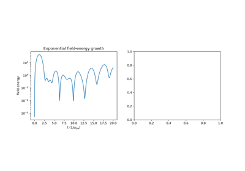
The two-stream instability: exponential growth and phase-space vortices
1940-1963 – Guiding-Center Theory and the Adiabatic Invariants#
Rather than integrate every fast gyration of a charged particle around a field line, plasma theorists – beginning with Alfven’s foundational 1940 and 1950 treatments and systematized over the following two decades into a rigorous asymptotic theory by Northrop in 1963 – showed that the orbit separates cleanly into a rapid gyration plus a slow drift of the gyration’s center – the guiding center – driven by any force or field gradient perpendicular to \(\mathbf{B}\). The gyration itself conserves an adiabatic invariant, the magnetic moment \(\mu=mv_\perp^2/2B\), to very high accuracy whenever the field changes slowly compared to the gyration period; as a particle’s guiding center drifts into stronger field, \(\mu\) conservation forces \(v_\perp\) to grow at the expense of \(v_\parallel\), the mechanism behind magnetic mirror confinement.
Implementation: physicskit.plasma.single_particle.exb_drift(),
grad_b_drift(), and
curvature_drift() give the
guiding-center drift velocities directly;
magnetic_moment() and
mirror_force() implement the
invariant and the resulting bounce motion in
magnetic_mirror_bounce().
References: H. Alfven, Arkiv f. Mat. Astr. Fysik 27A, No. 22 (1940), and Cosmical Electrodynamics (Oxford, 1950); systematized in T. G. Northrop, The Adiabatic Motion of Charged Particles (Interscience, 1963).
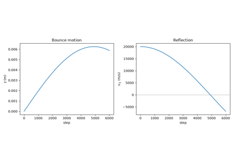
Guiding-center drifts and magnetic mirror confinement
1957-1958 – The Sweet-Parker Model of Magnetic Reconnection#
Peter Sweet and Eugene Parker proposed the first quantitative model of magnetic reconnection: oppositely directed field lines are driven together into a long, thin resistive current sheet, where finite conductivity finally lets them break and reconnect, converting stored magnetic energy into plasma flow and heat. Mass conservation through the sheet’s narrow exit throttles the whole process to a reconnection rate scaling as \(S^{-1/2}\) in the Lundquist number – for solar-flare conditions (\(S\sim10^{12}\)), millions of times slower than flares are observed to release their energy, a discrepancy that stood as an open problem until Petschek’s 1964 revision.
Implementation: physicskit.plasma.mhd.lundquist_number() and
sweet_parker_rate() /
sweet_parker_layer_width() reproduce the
model’s scaling laws directly. See it in
The Sweet-Parker reconnection-rate bottleneck.
References: E. N. Parker, “Sweet’s Mechanism for Merging Magnetic Fields in Conducting Fluids,” J. Geophys. Res. 62, 509-520 (1957); P. A. Sweet, in Electromagnetic Phenomena in Cosmical Physics, IAU Symp. 6, ed. B. Lehnert (Cambridge Univ. Press, 1958), p. 123.
Beyond the steady-state scaling laws, physicskit.plasma.instabilities.reconnection_harris_ic()
builds an actual perturbed Harris current sheet – the antiparallel
\(B_x=B_0\tanh(y/L)\) reversal Sweet and Parker’s picture presumes,
seeded with the small ripple needed to break the sheet’s translational
symmetry and localize reconnection to one X-point – and
simulate_reconnection() advances
the kinematic resistive-induction equation
\(\partial_t\psi=\eta\nabla^2\psi-\mathbf{v}\cdot\nabla\psi\) forward
under a prescribed stagnation-point inflow. This generic, spatially
extended resistive-diffusion model – flux transported in by a bulk flow
and broken only where resistivity finally acts – sits closer to
Sweet-Parker’s diffusion-throttled picture than to Petschek’s localized
standing-shock geometry below, even though (being purely kinematic
rather than solving the coupled momentum equation) it reproduces neither
rate law quantitatively; physicskit.plasma.visualizers.animate_reconnection()
animates the flux function merging at the X-point and the reconnected
flux squeezing out as outflow jets. See the extended animation in the
same gallery script,
The Sweet-Parker reconnection-rate bottleneck.
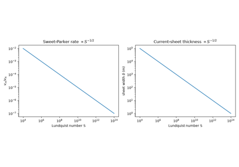
The Sweet-Parker reconnection-rate bottleneck
1958 – The Grad-Shafranov Equation#
Harold Grad and Hanan Rubin, and independently Vitalii Shafranov, derived the equation governing any static, axisymmetric magnetized-plasma equilibrium: force balance between the pressure gradient and the \(\mathbf{J}\times\mathbf{B}\) force reduces, in toroidal geometry, to a single nonlinear elliptic PDE for the poloidal flux function \(\psi(R,Z)\), \(\Delta^*\psi=-\mu_0R^2p'(\psi)-FF'(\psi)\). Every tokamak’s magnetic geometry – the nested flux surfaces confining its plasma – is, to leading order, a numerical solution of this one equation, making it the starting point of essentially all magnetic fusion equilibrium and stability analysis since.
Implementation: physicskit.plasma.mhd.solve_grad_shafranov()
solves the equation by successive over-relaxation for the linear
(Solov’ev) source term, validated against the exact closed-form solution
in solovev_particular_solution();
safety_factor_large_aspect_ratio() extracts
the resulting field line pitch.
References: H. Grad and H. Rubin, Proc. 2nd UN Conf. Peaceful Uses of Atomic Energy, Geneva, Vol. 31, p. 190 (1958); V. D. Shafranov, Zh. Eksp. Teor. Fiz. 33, 710-722 (1957) [Sov. Phys. JETP 6, 545-554 (1958)].
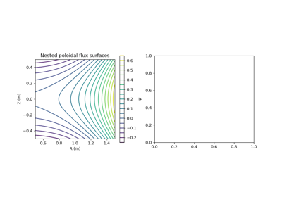
Solving the Grad-Shafranov equation for nested flux surfaces
1959 – Weibel and Fried: The Filamentation Instability#
Erich Weibel, analyzing the linearized Vlasov-Maxwell equations for a plasma whose velocity distribution is anisotropic (hotter in one direction than another, with no bulk streaming at all), found a purely growing transverse electromagnetic mode that needs no beam, no density gradient, and no external field to destabilize itself – only the anisotropy. Burton Fried, in a companion paper the same year, supplied the missing physical picture: with \(T_\perp>T_\parallel\), a random transverse magnetic fluctuation curves the orbits of the otherwise-undeflected transversely-moving particles enough to bunch them into current channels, and the growing current in each channel reinforces exactly the magnetic fluctuation that curved the orbits into existence in the first place – a self-sustaining feedback loop with no threshold. The resulting filamentation instability is now central to understanding collisionless shocks in astrophysical and laser-plasma settings alike: whenever counter-streaming plasma flows collide without colliding particles (the shock is too fast, the plasma too hot, for two-body collisions to mediate it), Weibel-generated magnetic turbulence does the job instead, isotropizing the flow and generating the seed fields later amplified into the microgauss-scale fields observed in gamma-ray-burst afterglows and supernova-remnant shocks.
growing (\(\gamma>0\)) for every wavenumber below the cutoff \(k_{max}=(\omega_{pe}/c)\sqrt{T_\perp/T_\parallel-1}\), fastest at \(k=0\) where the stabilizing magnetic tension vanishes entirely.
Implementation: physicskit.plasma.instabilities.weibel_growth_rate()
evaluates \(\gamma(k)\) directly, and
weibel_fastest_growing_mode()
extracts the long-wavelength growth rate that sets the overall
filamentation timescale;
simulate_weibel_filamentation()
superposes a spectrum of independently growing transverse-current
Fourier modes – exact linear theory, standing in for a full
2D-in-velocity electromagnetic PIC code – to show the real-space
current filaments forming and sharpening as the fastest modes overtake
the rest.
physicskit.plasma.visualizers.animate_weibel_filamentation()
animates the growing current pattern. See it in
Weibel filamentation: growing current filaments from temperature anisotropy.
References: E. S. Weibel, Phys. Rev. Lett. 2, 83-84 (1959); B. D. Fried, Phys. Fluids 2, 337-337 (1959).
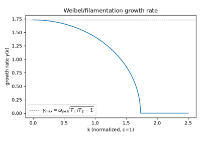
Weibel filamentation: growing current filaments from temperature anisotropy
1962 – Stix and the Cold-Plasma Dielectric Tensor#
Thomas Stix’s The Theory of Plasma Waves organized the bewildering zoo of magnetized-plasma wave modes – Alfven waves, whistlers, ion and electron cyclotron waves, the ordinary and extraordinary modes of magnetized-plasma radio propagation – into a single unified framework: a 3x3 dielectric tensor with components \(S\), \(D\), \(P\) built from each species’ plasma and cyclotron frequencies, from which every cold-plasma dispersion relation follows as one quartic equation in the refractive index. The Clemmow-Mullaly-Allis (CMA) diagram maps the entire parameter space of that quartic onto one two-dimensional plot.
Implementation: physicskit.plasma.waves.stix_parameters() builds
\(S\), \(D\), \(P\) for an arbitrary multi-species plasma;
cold_plasma_dispersion() solves the
resulting quartic at any propagation angle, and
cma_coordinates() supplies the CMA
diagram’s axes.
References: T. H. Stix, The Theory of Plasma Waves (McGraw-Hill, 1962).
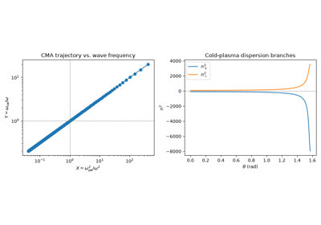
Stix’s cold-plasma dielectric tensor and the CMA diagram
1964 – Petschek’s Fast Reconnection#
Harry Petschek proposed a resolution to the Sweet-Parker rate problem: if the resistive diffusion region shrinks to a small X-point rather than extending the full length of the current sheet, four standing slow-mode shocks radiating from that X-point can carry away most of the inflowing magnetic flux and energy. The resulting reconnection rate falls only logarithmically with the Lundquist number, \(v_{in}/v_A\approx\pi/(8\ln S)\), fast enough to plausibly explain solar flare and magnetospheric substorm energy-release timescales that Sweet-Parker reconnection could not.
Implementation: physicskit.plasma.mhd.petschek_rate() – compare
directly against sweet_parker_rate() at the
same Lundquist number to see the difference explode as \(S\) grows.
References: H. E. Petschek, “Magnetic Field Annihilation,” AAS-NASA Symposium on the Physics of Solar Flares, NASA SP-50 (1964), p. 425.
(The time-evolving X-point simulation of
simulate_reconnection(), animated
in the Sweet-Parker entry above, is a generic resistive current-sheet
model rather than a localized-shock one, so it is presented there rather
than duplicated here.)
1966 – Washimi and Taniuti: Ion-Acoustic Solitons#
Ion-acoustic waves – the plasma analogue of ordinary sound, ions providing the inertia and Boltzmann-distributed electrons providing the restoring pressure – are dispersive at short wavelength, since a plasma’s finite Debye length lets nearby wavelengths propagate at slightly different speeds. Haruichi Washimi and Tosiya Taniuti, at Nagoya University, applied the “reductive perturbation” method to the coupled cold-ion-fluid/Boltzmann-electron equations in the weakly nonlinear, weakly dispersive limit and showed the result reduces exactly to the Korteweg-de Vries equation – the same normal form governing shallow-water solitary waves – with the ion-acoustic physics fixing only the physical units of its terms. A KdV equation supports an exact traveling-wave solution that never disperses: nonlinear steepening (which would otherwise shock the wave) is balanced, term for term, against linear dispersion (which would otherwise spread it), so a single density bump of just the right width-to-amplitude ratio propagates forever at constant speed and shape – an ion-acoustic soliton, later observed directly in laboratory double-plasma experiments and now understood as one member of the same integrable soliton family whose most famous representative is the KdV equation’s own 1965 numerical rediscovery by Zabusky and Kruskal.
Implementation: physicskit.plasma.waves.ion_acoustic_soliton_profile()
builds the exact single-soliton solution of speed \(c\) (amplitude
\(c/2\)) directly from this formula, and
ion_acoustic_soliton_evolve()
time-steps it with a pseudo-spectral, Strang-split scheme – the stiff
\(\partial_\xi^3\) dispersion advanced exactly in Fourier space, the
nonlinear advection by RK4 – so the soliton’s unchanging shape as it
propagates is a genuine numerical result, not built in by construction.
physicskit.plasma.visualizers.animate_ion_acoustic_soliton()
animates the traveling pulse. See it in
Ion-acoustic solitons: a KdV pulse that never changes shape.
References: H. Washimi and T. Taniuti, Phys. Rev. Lett. 17, 996-998 (1966); N. J. Zabusky and M. D. Kruskal, Phys. Rev. Lett. 15, 240-243 (1965).
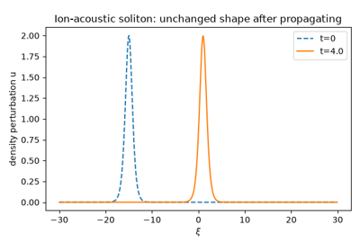
Ion-acoustic solitons: a KdV pulse that never changes shape
1970 – The Boris Particle Pusher#
Jay Boris, developing early particle-in-cell plasma codes, needed a numerical integrator for the Lorentz force \(m\dot{\mathbf{v}}=q(\mathbf{E}+\mathbf{v}\times\mathbf{B})\) that would not spuriously heat or cool a particle over millions of simulated gyro-orbits. His scheme splits each leapfrog step into an electric half-kick, an exact rotation about \(\mathbf{B}\) computed without any trigonometry (the “Boris rotation” trick), and a second electric half-kick; the rotation step conserves speed to machine precision in a pure magnetic field, regardless of step size. Half a century later it remains the default particle integrator in essentially every electromagnetic and electrostatic PIC plasma code written.
Implementation: physicskit.plasma.single_particle.boris_push()
and boris_integrate()
implement the scheme with Numba-compiled kernels;
physicskit.plasma.kinetic reuses the same leapfrog philosophy for
its particle-in-cell push step. The closed-form
larmor_radius() gives the exact
gyroradius the rotation step traces out, unchanged orbit after orbit.
References: J. P. Boris, “Relativistic Plasma Simulation – Optimization of a Hybrid Code,” Proc. 4th Conf. on Numerical Simulation of Plasmas, Naval Research Laboratory (1970), pp. 3-67.
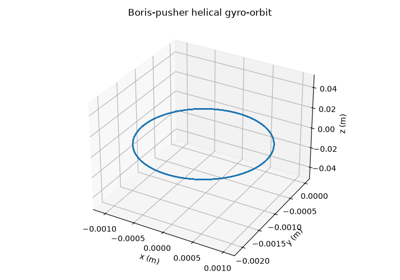
Energy-conserving gyration with the Boris pusher
1977-1978 – Hasegawa and Mima: The Drift-Wave Turbulence Equation#
Akira Hasegawa and Kunioki Mima, working at Bell Laboratories, asked what the simplest possible nonlinear equation is that still captures how a magnetized plasma’s density-gradient-driven drift waves saturate into turbulence rather than growing forever. Their answer – published in two 1977-1978 papers on strong turbulence in a magnetized nonuniform plasma – reduces the full gyrokinetic problem to a single scalar equation for the electrostatic potential, retaining just enough finite-Larmor-radius physics (through the \(\nabla^2\phi\) term) to let \(\mathbf{E}\times\mathbf{B}\) advection nonlinearly saturate the wave, while assuming adiabatic (Boltzmann) electrons and dropping parallel dynamics entirely. First derived independently by Jule Charney in 1948 as a model for Rossby waves in a rotating atmosphere, the identical equation in its plasma incarnation is now the standard minimal model for the self-organization of drift-wave turbulence into long-lived coherent vortices (“blobs”) that dominate cross-field particle and heat transport in a magnetic-confinement fusion device – the same phenomenon that has made turbulent transport, rather than classical collisional diffusion, the central obstacle in fusion reactor design.
where \(\{\phi,\zeta\}=(\partial_x\phi)(\partial_y\zeta)-(\partial_y\phi)(\partial_x\zeta)\) is the \(\mathbf{E}\times\mathbf{B}\) advection of potential vorticity \(q=\nabla^2\phi-\phi\), and \(\partial_y\phi\) is the linear drift wave sourced by the background density gradient.
Implementation: physicskit.plasma.turbulence.drift_wave_noise_ic()
seeds small-amplitude, featureless potential noise – the “let it find
its own structure” initial condition appropriate for a turbulence that,
in a real device, is continuously driven by many unstable modes at
once rather than growing from one clean seed; and
simulate_hasegawa_mima() advances
the potential-vorticity equation pseudo-spectrally with RK4, Strang-split
around an exactly-integrated dissipative term
(hasegawa_mima_rhs() supplies the
non-dissipative right-hand side), reproducing the characteristic
nonlinear cascade of small-scale drift-wave noise into large-scale
coherent vortices – the same inverse-cascade phenomenology 2D
Navier-Stokes turbulence shows in physicskit.fluids, arrived at
here from magnetized-plasma drift-wave physics rather than incompressible
hydrodynamics. physicskit.plasma.visualizers.animate_drift_wave_turbulence()
animates the potential field self-organizing. See it in
Hasegawa-Mima drift-wave turbulence: noise self-organizing into vortices.
References: A. Hasegawa and K. Mima, Phys. Rev. Lett. 39, 205-208 (1977), and Phys. Fluids 21, 87-92 (1978); precursor J. G. Charney, Geofysiske Publikasjoner 17(2), 1-17 (1948).
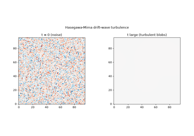
Hasegawa-Mima drift-wave turbulence: noise self-organizing into vortices
1979 – Tajima and Dawson: The Laser Wakefield Accelerator#
Toshiki Tajima and John Dawson proposed a radically more compact alternative to the kilometers-long radio-frequency cavities of conventional accelerators: fire an intense, short laser pulse into a plasma, let its ponderomotive force (the pulse’s own intensity gradient pushing electrons out of its way) excite a large-amplitude plasma wave in its wake, and inject a second bunch of electrons to “surf” that wake’s longitudinal electric field. Because a plasma wave’s electric field is not limited by material breakdown the way a copper cavity’s is, the accelerating gradient in a laser-driven wakefield can exceed conventional accelerators’ by three to four orders of magnitude – Tajima and Dawson’s original estimate was gigaelectronvolts of energy gain per centimeter of plasma, at a time when the largest radio-frequency accelerators gained on the order of tens of megaelectronvolts per meter. Their proposal, verified in one-dimensional particle-in-cell simulation in the same paper, launched the field of laser (and later beam-driven) plasma wakefield acceleration, which by the 2020s had demonstrated multi-GeV energy gains over a few centimeters of plasma in real experiments.
Implementation: physicskit.plasma.acceleration.wakefield_e_field()
prescribes exactly the traveling accelerating structure a driver
pulse or beam excites, \(E_z(x,t)=E_0\cos[k(x-v_{ph}t)]\), standing
in for the self-consistent field a full particle-in-cell wakefield
simulation would derive; and
simulate_wakefield_acceleration()
injects a single test charge into it with the same energy-conserving
physicskit.plasma.single_particle.boris_push() used for gyro-orbits
elsewhere in this package, showing the particle gain kinetic energy by
riding the wake’s accelerating phase for as long as it stays within the
“bucket” – the qualitative surfing picture of wakefield acceleration,
without the driver’s own self-consistent field generation.
physicskit.plasma.visualizers.animate_wakefield_acceleration()
animates the particle surfing the wake alongside its energy-gain trace.
See it in Plasma wakefield acceleration: a test charge surfing a traveling wave.
References: T. Tajima and J. M. Dawson, Phys. Rev. Lett. 43, 267-270 (1979).
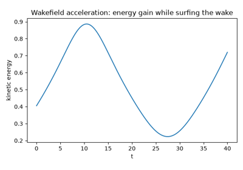
Plasma wakefield acceleration: a test charge surfing a traveling wave
1980s-Present – Gyrokinetics and Fusion Turbulence#
Modern magnetic-confinement fusion research is dominated by gyrokinetic theory: rather than track a particle’s full gyration (as the Boris pusher does) or reduce all the way to a fluid (as MHD does), gyrokinetics analytically averages the Vlasov equation over the fast gyro-angle while retaining the finite-Larmor-radius physics needed for turbulence, producing a reduced kinetic equation for the guiding-center distribution alone. This closes the gap between the guiding-center drift theory of 1940-1963 above and full kinetic simulation, and is the theoretical foundation of every modern turbulent-transport code (GENE, GYRO, GS2) used to predict a fusion reactor’s confinement performance before it is built.
Connection: the guiding-center machinery in
physicskit.plasma.single_particle – drifts, the adiabatic
invariant, mirror bounce motion – is precisely the single-particle
foundation gyrokinetic theory builds on; the electrostatic
particle-in-cell solver in physicskit.plasma.kinetic is the same
method (sample the distribution with particles, evolve their orbits,
solve self-consistently for the field) that full gyrokinetic turbulence
codes use, one gyro-average away from the reactor-scale simulations
gyrokinetics enabled.
References: gyrokinetics developed gradually with no single milestone paper; E. A. Frieman and L. Chen, Phys. Fluids 25, 502-508 (1982) is the key formalizing reference for the nonlinear gyrokinetic equation used throughout modern turbulence codes.
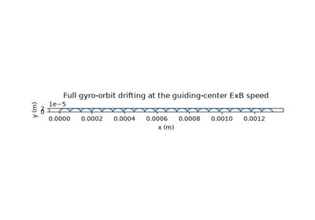
Recovering the ExB drift as a time-average of the full orbit